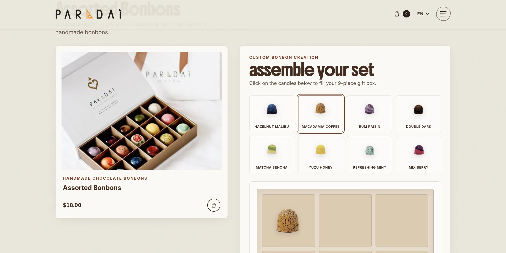
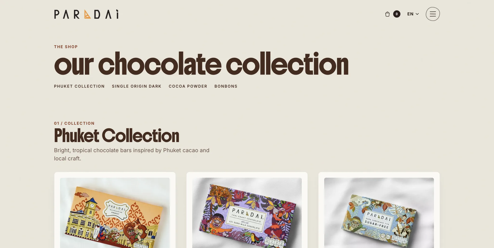
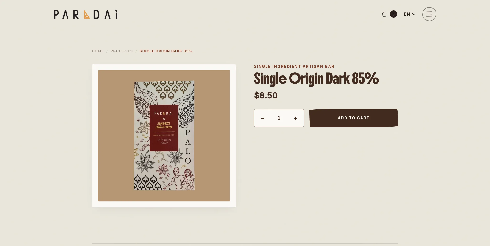
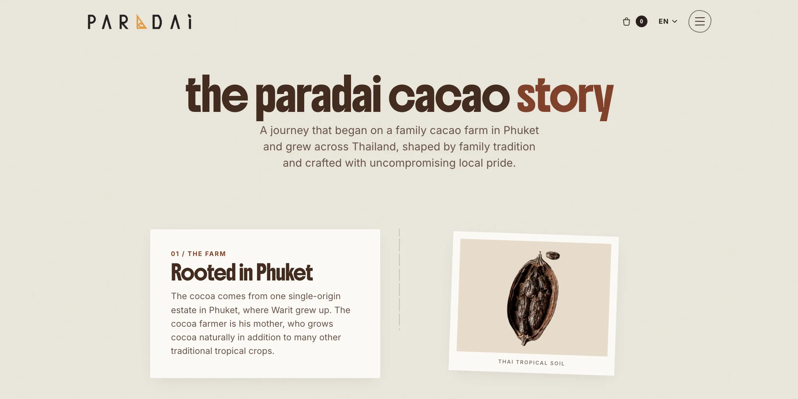
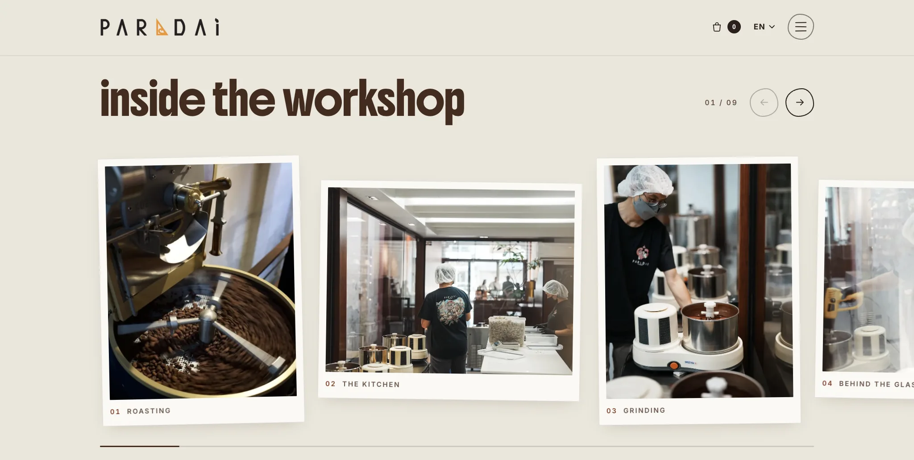
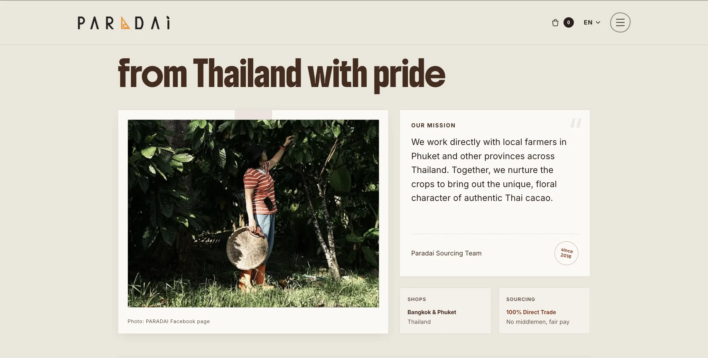
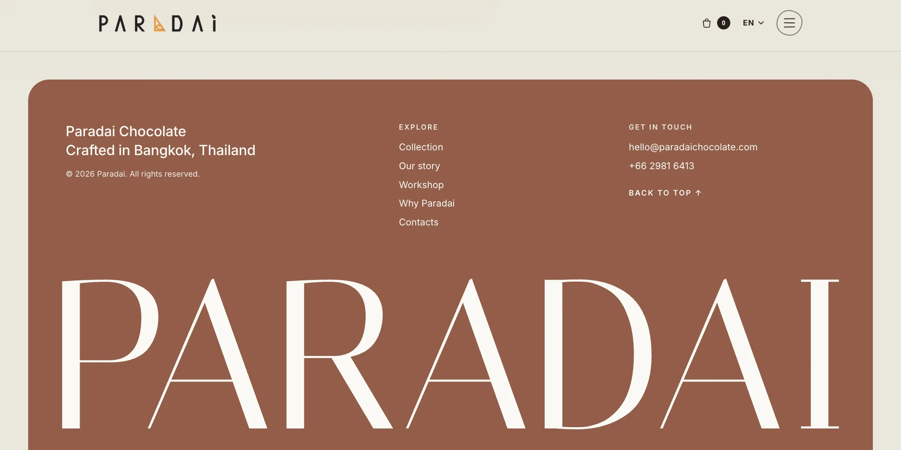

№ 006 · PARADAI.HTML
Paradai
Концепт сайта-магазина для тайского бренда крафтового шоколада. Не официальный сайт Paradai
- Роль
- Дизайн, UX и вёрстка
- Тип
- Концепт
- Статус
- Концепт · предложен бренду
- Инструменты
- Framer · React · TypeScript · Framer Motion · Canvas

01 Контекст и цели
Paradai — тайский бренд крафтового шоколада bean-to-bar: от какао-боба с семейной фермы на Пхукете до плитки. Магазины в Бангкоке и на Пхукете.
Это концепт, а не официальный сайт: я сделала его по собственной инициативе и предложила бренду. Тексты, фото и контакты взяты из открытых источников Paradai.
02 Задача
Показать бренд так же ярко, как его упаковка с иллюстрациями, и дать купить шоколад онлайн: каталог, страница товара, корзина и возможность собрать свой набор конфет.
03 Концепция и визуальный стиль
Тёплая кремово-бежевая палитра и шоколадно-коричневый текст, крупные плотные заголовки строчными буквами и фото, оформленные как полароиды. Сайт спокойный, чтобы главными оставались яркие иллюстрированные упаковки.
04 Ключевые UX/UI-решения
Страница товара
Галерея с навигацией по превью и хлебные крошки — понятно, где ты в каталоге.
Конструктор коробки конфет
Покупатель собирает свою коробку бонбонов прямо в каталоге, а корзина выезжает сбоку и не уводит со страницы.
История через движение
Таймлайн Bean-to-Bar и раздел «Наша история» раскрываются scroll-анимациями с наклоном.
Бережная анимация
Анимации учитывают системную настройку «уменьшить движение» (useReducedMotion).
05 Экраны, макеты и адаптив














06 Реализация
- Компоненты: страница товара, «Наша история», таймлайн Bean-to-Bar, магазин с конструктором коробки и корзиной, сетка коллекции.
- ScentVolatilityTimeline — визуализация раскрытия аромата на HTML5 Canvas.
- Найден Framer-специфичный баг: Framer передаёт цвета в rgba(), из-за чего createLinearGradient молча не работал. Решение — рисование через globalAlpha.